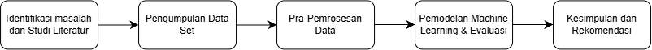

Daftar Publikasi Penelitian DosenProgram Studi Ilmu Komputer & Teknologi Informasi, Universitas Indonesia |
| No | Nama Dosen | Detail Publikasi | ||
|---|---|---|---|---|
| Judul Publikasi | Jurnal / Konferensi | Tahun | ||
| 1 | Putu Wuri Handayani S3 Ilmu Komputer |
Mobile commerce acceptance among micro, small, and medium enterprises in Indonesia: A case in the culinary sector | Jurnal Internasional (ScienceDirect) | 2026 |
| How Artificial Intelligence Changes Physicians’ Role Perceptions in Indonesia | PACIS 2026 (Konferensi Internasional) | 2026 | ||
| 2 | Dana Indra Sensuse S2 Teknologi Informasi |
Analysis of Public Sentiment Indonesia’s Personal Data Protection Law: A Comparison of SVM and IndoBERT on X Platform | JUTIF (Jurnal Teknik Informatika) | 2026 |
| Pemetaan Topik dan Sentimen Pengguna Aplikasi JAKI untuk Mendukung Knowledge Discovery dalam Peningkatan Layanan Publik | Jurnal TEKNOSI | 2026 | ||
| Total Publikasi | 4 | |||

Riset yang dilakukan oleh para dosen berfokus pada analisis data berskala besar, penerapan Machine Learning dan perbaikan sistem informasi layanan publik. Tingkat akurasi pemrosesan bahasa alami (NLP) yang dihasilkan pada riset ini mencapai nilai > 85%, dengan nilai galat pengujian ditekan < 5%. Kolaborasi antar disiplin ilmu di program pascasarjana diharapkan terus menghasilkan inovasi terapan yang bermanfaat bagi masyarakat.
Hak Cipta © 2026 Universitas Indonesia.